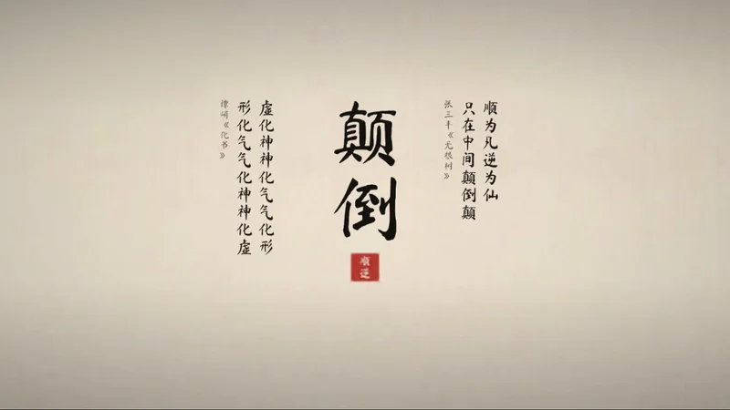
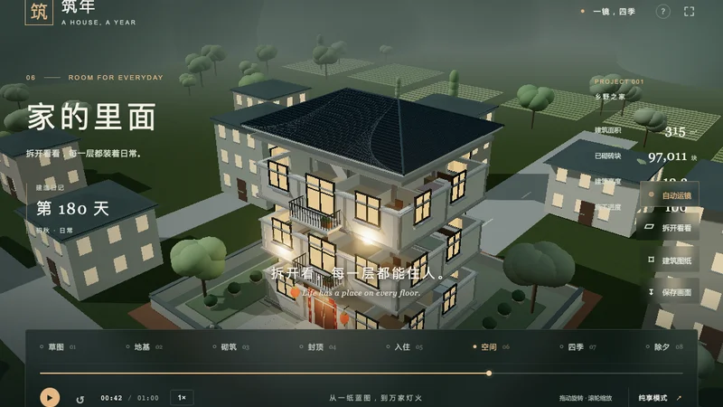
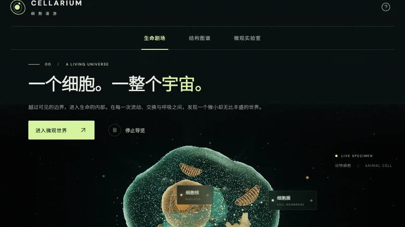
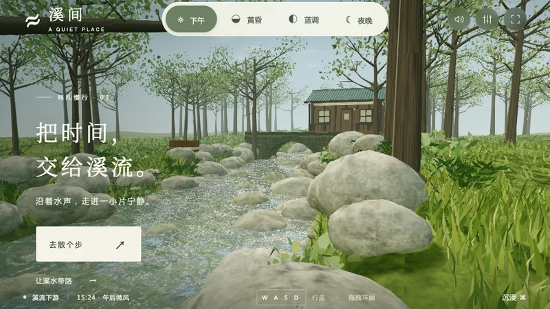
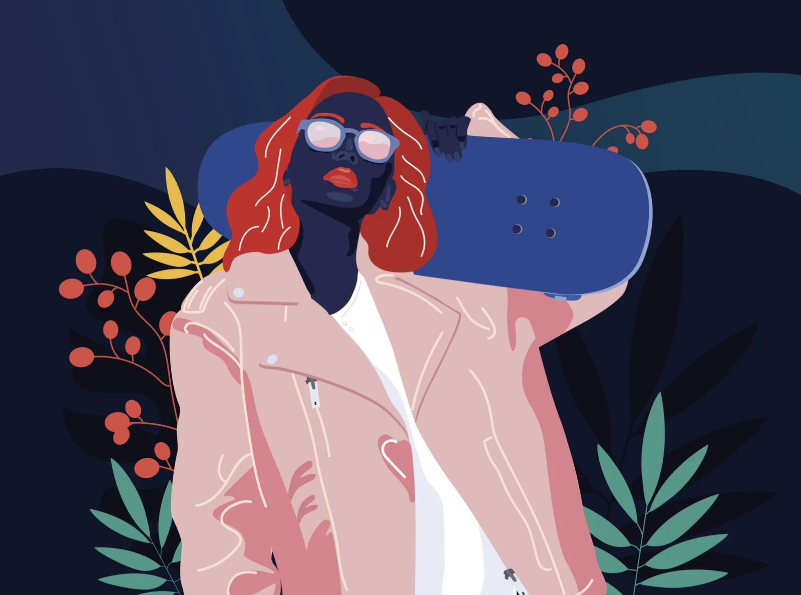
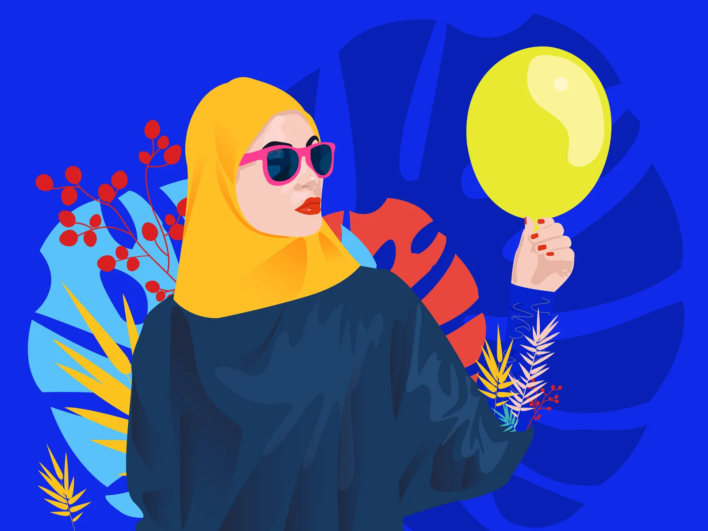
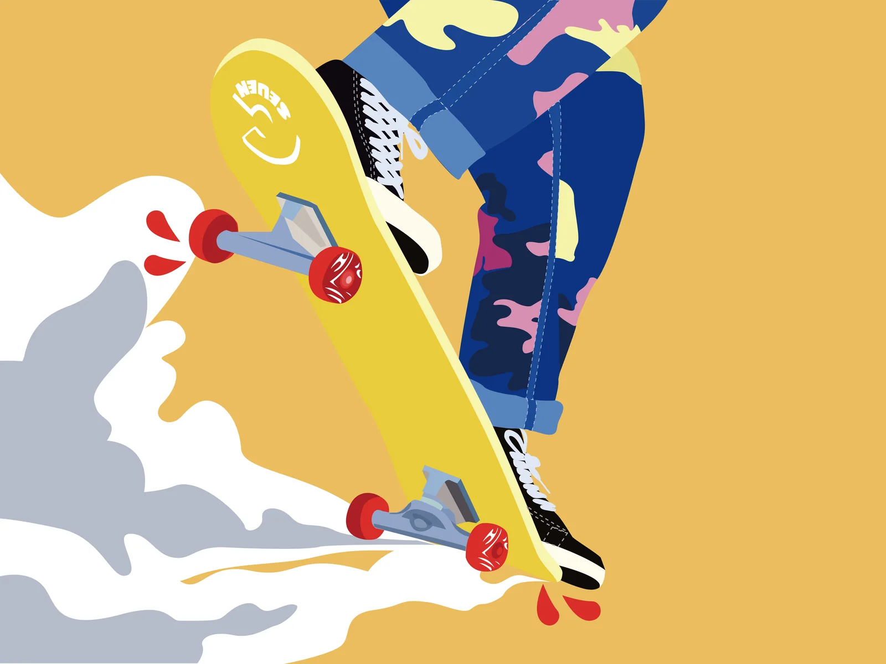
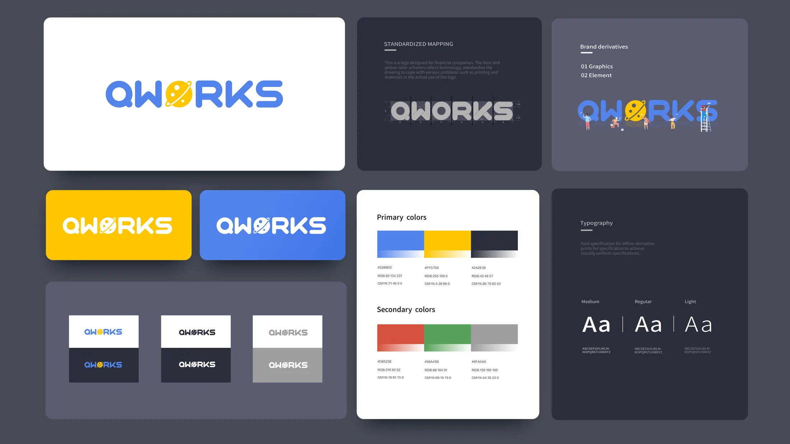
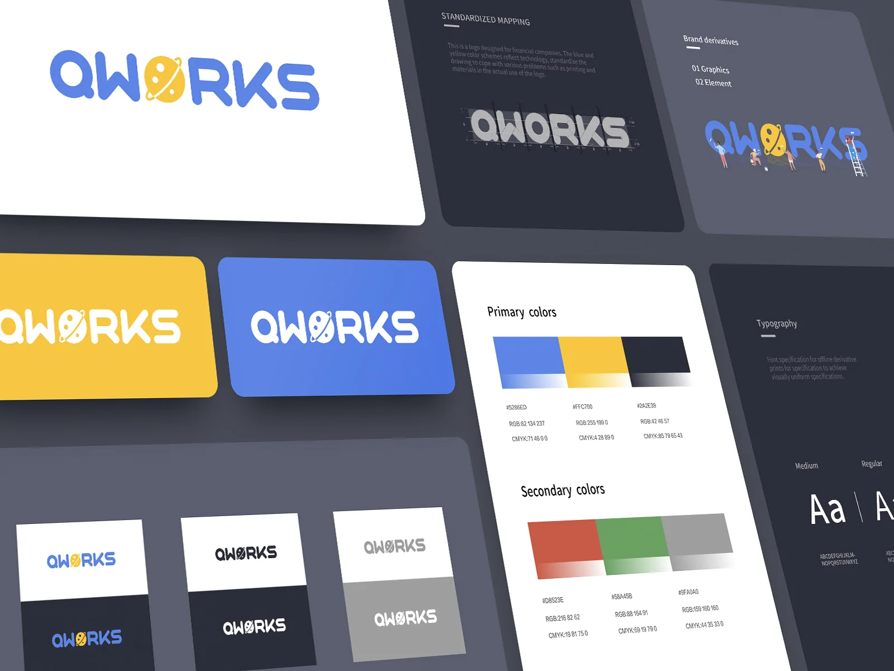
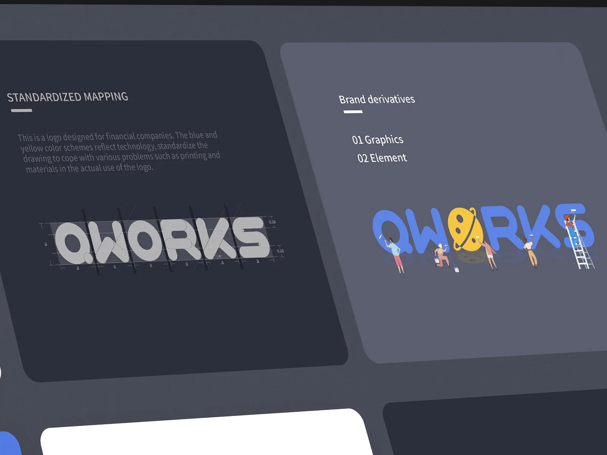

如果一幅画能互动，
会是什么样？
带着这个问题，我做了一组网页实验。你可以拖动时间轴，看草图里的房子在四季里慢慢成形，也可以沿着林间小溪走一段，听听水声。
实验墙
选择一个网页实验，进入互动体验。

颠倒 · 水墨山水
沿着时间轴，看水墨山水如何颠倒变换。

筑年
拖动时间轴，看一张草图如何在四季里长成一栋房子。

细胞漫游
旋转细胞，打开剖面，探索细胞器的位置与结构。

溪间
沿林间溪流散步，切换时刻，听水声从身边流过。
插画
Illustration · 用色彩和植物元素，画下情绪和生活里的小片段。




品牌 VI · QWORKS
传播企业经营理念、建立知名度、塑造企业形象——简化、统一、系列、组合。



 Design community · 个人影响力
Design community · 个人影响力更多作品，
在我的 Dribbble。
dribbble.com/lipan16229290
去看看